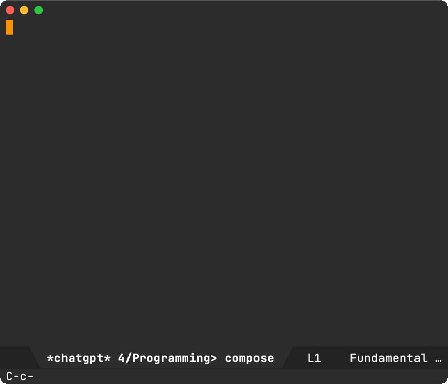
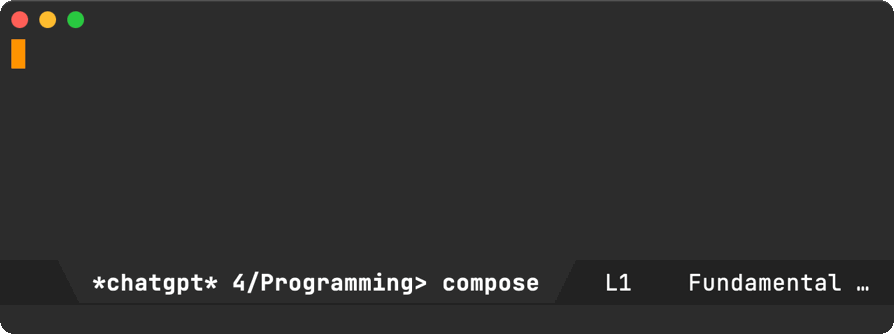

Álvaro Ramírez
A cure for JavaScript fatigue?
It's been roughly a decade since I wrote any significant amount of JavaScript. Back then, I primarily relied on the Google Closure Compiler in my project. Yeah, I know… These days, it's hard not to bump into any JavaScript project that doesn't rely on npm, along with many other tools like the Typescript compiler, ESLint, Prettier… There are a ton of available frameworks too. I was a little put off by the ramp-up to re-entry the JavaScript world. I guess that's what some refer to as Javascript Fatigue.
I'm giving JavaScript another try, but this time with the help of my trusty Emacs chatgpt-shell. Now, I typically know what I want to accomplish, but I'm unfamiliar the modern JavaScript world and which project knobs to turn when setting things up.
While I may want to dig deeper in the future, at present I just want to dabble with JavaScript. I want a local project set up as quickly as possible. ChatGPT has been pretty handy at that. The Emacs ChatGPT shell and its minibuffer prompts work fairly well for my needs, yet I often found myself wishing it could somehow behave more like a magit commit buffer. That is, launch a dedicated buffer (not the shell itself) to just ask a quick question and send it on its way with that so familiar and satisfying C-c C-c binding (btw, sending mail says hello).
This is where M-x chatgpt-shell-prompt-compose comes in. It's a mesh between the ChatGPT shell and a magit commit buffer:

In the background, the buffer is still powered by the shell itself, so you can reuse it to ask clarifying questions.

A couple of additional features worth mentioning… Invoking chatgpt-shell-prompt-compose with an active region automatically copies the region content over to the compose buffer. This is handy if you'd like to create more elaborate prompts with further editing. So far, this feels more natural than editing text from the shell or the minibuffer, where RET doesn't insert new lines.
The compose buffer is powered by a background shell (storing history for us). Typing clear followed by C-c C-c clears the background shell history.
chatgpt-shell-prompt-compose is available in chatgpt-shell v0.72.1. I've so far bound it to C-c C-e, though I've already found some unfortunate clashes.